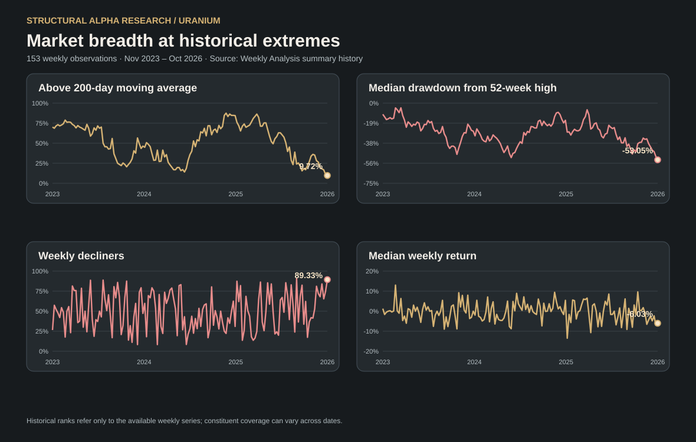

1. Executive Summary
The uranium sector continues to deteriorate technically, with selling pressure becoming nearly universal and bullish participation approaching extreme lows.
The week ended with 67 of the 75 securities analyzed in negative territory, a median weekly return of −6.03%, and only 7 of the 72 securities with valid data trading above their 200-day moving averages.
The most troubling aspect is not simply the magnitude of weekly losses but their persistence. The median drawdown from 52-week highs has reached −53.05%, compared with −49.83% one week earlier.
This behavior is consistent with a possible phase of equity-market capitulation, although there is still insufficient evidence to conclude that the sector has established a bottom.
2. Market Breadth: Selling Becomes Widespread
Of the 75 securities analyzed, 89.3% declined and just 10.7% advanced. Market breadth deteriorated considerably compared with the previous week.
| Indicator | Oct. 16 | Oct. 23 |
|---|---|---|
| Advancing securities | 17 | 8 |
| Declining securities | 56 | 67 |
| Median weekly return | −7.05% | −6.03% |
| Declines greater than 5% | 47 | 48 |
| Declines greater than 10% | 22 | 15 |
An important distinction emerges: although the median weekly loss became slightly less severe, the proportion of companies ending the week in negative territory increased.
This suggests that selling pressure is spreading to a larger share of the universe even as the intensity of some individual declines moderates.
This is not a correction confined to a handful of speculative companies. Weakness affects producers, developers, explorers, and businesses associated with nuclear technology.
3. Long-Term Trend: Extreme Deterioration
The share of securities trading above their 200-day moving averages has fallen from 19.44% four weeks ago to just 9.72% now.
The median distance from the MA200 is now −29.65%, compared with −26.65% the previous week.
These figures describe a market in which the overwhelming majority of securities are trading substantially below their long-term trends.
However, readings this negative also warrant monitoring for possible seller exhaustion. Extreme oversold conditions are not, by themselves, a buy signal.
4. Drawdowns: Structural Deterioration, Not Just Weekly Weakness
The median drawdown from 52-week highs has reached −53.05%, compared with −49.83% the previous week, among 72 securities with sufficient data.
Of those 72 securities, 66 are more than 20% below their annual highs, while 64 have declined by more than 30%.
In other words, 88.9% of the valid sample is trading more than 30% below its 52-week high.
The median drawdown from each security's highest price across its full available history is also −84.87%. This figure requires caution: the price series begin on different dates, and some all-time highs may belong to much earlier market cycles.
5. Volume: Sellers Dominate, but There Is No Broad Trading-Volume Explosion
Volume analysis introduces an important qualification.
| Indicator | Previous week | Current week |
|---|---|---|
| Median relative volume | 1.01× | 0.78× |
| Securities with relative volume above 1.5× | 16.0% | 10.7% |
| Median signed volume balance | −20.11% | −26.66% |
| Securities with positive signed balance | 21.3% | 14.7% |
Signed volume balance measures the difference between volume traded on advancing and declining sessions over the past 20 trading sessions, expressed as a percentage of total volume.
Its deterioration to −26.66% confirms that trading volume is predominantly concentrated on down days.
However, median relative volume has fallen to 0.78 times its normal reference level. Selling pressure is persistent, but it is not accompanied by a generalized increase in trading volume.
This distinction is crucial: the data show a withdrawal of buyers and an unfavorable supply-demand imbalance, but they do not yet identify a final capitulation characterized by an extraordinary surge in trading activity.
6. Performance of Major Uranium Companies
The sell-off has also reached some of the sector's best-known companies.
| Company | 1W | 4W | 2026 YTD |
|---|---|---|---|
| Cameco (CCJ) | −3.58% | −10.75% | −20.25% |
| Kazatomprom (KAPq.L) | −7.61% | −11.85% | +7.40% |
| NexGen Energy (NXE.TO) | −3.55% | −12.44% | −19.03% |
| Denison Mines (DNN) | −4.82% | −18.11% | −28.38% |
| Paladin Energy (PDN.AX) | −6.01% | −27.96% | −32.08% |
| Uranium Energy (UEC) | −7.08% | −21.89% | −43.94% |
| Energy Fuels (UUUU) | −11.22% | −33.74% | −54.92% |
| Deep Yellow (DYL.AX) | −17.68% | −46.22% | −65.30% |
The data reveal meaningful differences. Cameco and Kazatomprom suffered comparatively moderate weekly losses relative to certain developers and more speculative companies.
At the negative extreme, Deep Yellow stands out, declining 17.68% for the week and 46.22% over four weeks.
This points to growing differentiation among companies, although price performance alone does not establish whether that differentiation is driven by project quality or balance-sheet strength.
ETFs Confirm the Weakness
All three ETFs declined, but less severely than the median security in the analyzed universe. This suggests that weakness is especially pronounced in certain segments of the sample.
7. Are There Early Signs of Recovery?
The analysis identifies a few isolated pockets of resilience against the prevailing downtrend.
Infini Resources topped the weekly ranking with a 20.00% gain and relative volume of 3.10×. Nevertheless, it remains 20.30% below its MA200 and is down 57.89% year to date.
Berkeley Energia, meanwhile, declined 6.03% during the week but retains a positive return of 54.27% over four weeks and 56.13% in 2026.
These are examples of relative strength or individual rebounds, not evidence of a broad sector recovery.
A more convincing trend reversal would require a sustained increase in the number of advancing securities, a recovery in participation above the MA200, and an improvement in signed volume balance.
8. Historical Perspective: Exceptional Oversold Conditions Across 153 Weeks
The comparison with 153 weekly observations available since November 24, 2023 confirms that the current deterioration is exceptional within our monitoring history.
Participation above the MA200 has fallen to 9.72%, the lowest reading in the series. At the same time, the median drawdown from 52-week highs has reached −53.05%, also the most negative observation over the period.
The weekly breadth measure reinforces this conclusion: 89.33% of securities declined, the second-highest proportion in the historical sample.
However, the median weekly return of −6.03% ranks only as the twentieth-worst week. This contrast shows that the current deterioration is particularly exceptional in its breadth and cumulative depth, rather than in the magnitude of a single weekly decline.

Source: Structural Alpha Research weekly URANIUM summary history. Charts show actual weekly observations, not illustrative curves. The sample's composition and valid denominators may change between dates. These historical rankings are not forecasts.
The coincidence of the lowest MA200 participation and the deepest median 52-week drawdown is an exceptional oversold signal within the available dataset. It does not, however, confirm a market bottom or establish when a recovery might begin.
Future changes in market breadth, moving-average participation and volume balance will be essential for identifying a more durable shift in trend.
9. Conclusion: Extreme Oversold Conditions, but No Confirmed Bottom
The uranium sector exhibits a particularly negative combination of technical signals: 89.3% declining breadth, a median drawdown exceeding 53%, less than 10% of valid securities above MA200, and an increasingly unfavorable signed volume balance.
The scale of the deterioration justifies considering whether an equity-market capitulation phase may be developing.
Nevertheless, the available evidence is better described as persistent selling pressure than a final capitulation that has already run its course. Relative volume remains below its normal reference level, and signs of recovery are still scarce.
The possibility of a significant investment opportunity deserves close monitoring, but it still requires confirmation.
This week's conclusion is clear: the uranium equity market is technically very weak, and many companies have suffered deep share-price corrections. The decisive question is when this weakness stops spreading and sustained buying demand begins to return.
Scope and limitations: The 75-instrument universe includes uranium miners, developers, explorers, nuclear technology companies, utilities and ETFs. This is a technical equity-market study, not an assessment of U₃O₈ spot or long-term contract fundamentals. Historical sample composition and data availability may differ. The observations and interpretations above do not constitute personalized investment advice. Read our methodology.
Complete weekly ranking · 75 instruments
Search by ticker or company, sort any column in both directions, or copy the complete nine-column ranking for Excel. Ranking data is loaded from the original Weekly Analysis publication JSON; missing values are shown as —.
Loading ranking…
Loading ranking…
Data and further reading
The complete ranking is presented interactively above. The original JSON is publicly available at ranking.json. No private Excel workbook or proprietary ranking model is published.
Continue exploring
Research archive · Research methodology · Global mining market review